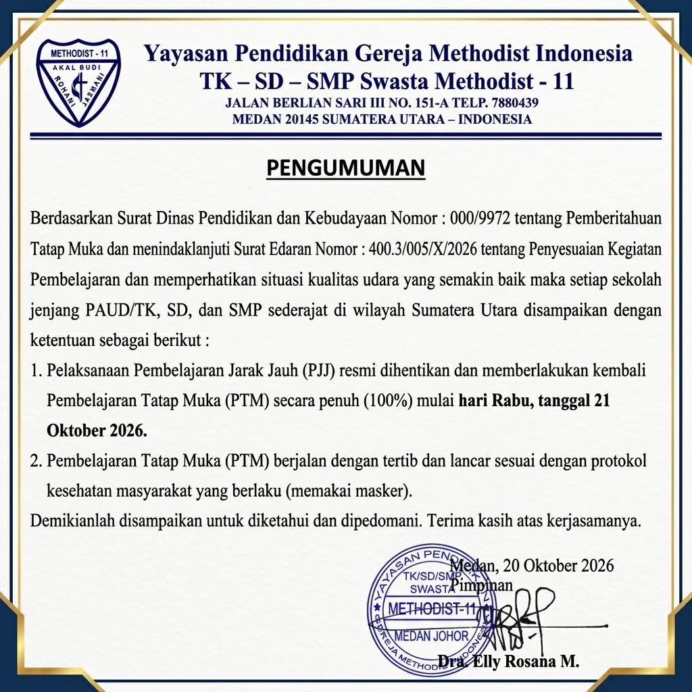

Yayasan Pendidikan Gereja Methodist Indonesia
TK – SD – SMP SWASTA METHODIST - 11
JALAN BERLIAN SARI III NO. 151-A TELP. 7880439
MEDAN 20145 SUMATERA UTARA – INDONESIA
Berdasarkan Surat Dinas Pendidikan dan Kebudayaan Nomor : 000/9972 tentang Pemberitahuan Tatap Muka dan menindaklanjuti Surat Edaran Nomor : 400.3/005/X/2026 tentang Penyesuaian Kegiatan Pembelajaran dan memperhatikan situasi kualitas udara yang semakin baik maka setiap sekolah jenjang PAUD/TK, SD, dan SMP sederajat di wilayah Sumatera Utara disampaikan dengan ketentuan sebagai berikut :
Demikianlah disampaikan untuk diketahui dan dipedomani. Terima kasih atas kerjasamanya.
Medan, 20 Oktober 2026
Pimpinan
Dra. Elly Rosana M.

Klik gambar surat di atas untuk memperbesar dokumen resmi.